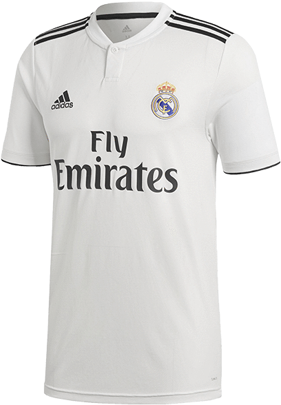

Los Blancos

Real Madrid Club de Fútbol is een Spaanse voetbalclub uit Madrid. De club werd opgericht op 6 maart 1902 als Madrid Club de Fútbol. Meestal wordt de huidige clubnaam afgekort tot Real Madrid. Daarnaast heeft het enkele bijnamen, zoals Los Blancos en Los Merengues. De club speelt haar thuiswedstrijden in het Estadio Santiago Bernabéu en werd door de FIFA benoemd als de beste voetbalclub van de 20e eeuw. De aartsrivaal van Real Madrid is FC Barcelona, wedstrijden tussen beide clubs staan bekend als El Clásico.
Real Madrid won vijfendertig keer de Primera División, negentien keer de Copa del Rey, elf keer de Supercopa de España, vier keer de UEFA Super Cup, twee keer de UEFA Cup, drie keer de wereldbeker voor clubteams, vier keer het wereldkampioenschap voor clubs en veertien keer de Europacup I / UEFA Champions League. Real Madrid is met veertien Europacup I / UEFA Champions League-overwinningen recordhouder van het toernooi, voor het Italiaanse AC Milan, dat het toernooi zeven keer wist te winnen.

Real Madrid draagt al sinds zijn ontstaan een wit tenue, met in zijn beginjaren een blauwe diagonale streep over het shirt. Het gestreepte shirt werd vervangen door een volledige witte versie. Op 23 november 1947, in een wedstrijd tegen Atlético Madrid, werd Real Madrid het eerste Spaanse team dat nummers droeg op hun shirts.
De traditionele uit-kleuren zijn volledig zwart of volledig paars. Sinds 1998 is adidas het kledingmerk waarbij het tenue wordt gemaakt. Hun eerste shirtsponsor was Zanussi in 1982. Tegenwoordig is het in Dubai gevestigde Emirates de hoofdsponsor. De oprichting van de roemrijke club gaat terug tot 6 maart 1902, de eerste donderdag van de maand. Tijdens de oprichting luisterde de club nog naar de naam ‘Madrid Football Club’. De club ontstond uit een groep studenten die op dat moment niet zouden weten tot wat voor club ‘Real’ diezelfde eeuw nog zou uitgroeien. Tussen 1900 en 1910 werd de start gemaakt van het Spaanse voetbal, de aanloop naar de Primera División zoals we die nu kennen. Het duurde niet lang voordat de eerste prijs binnen was, in 1903 werd al meteen het regionale Madrileense kampioenschap behaald. In 1905 volgde de eerste landelijke prijs toen de ‘Copa del Rey’ werd binnengehaald, na een 1-0 overwinning tegen Athletic Bilbao. Dit was slechts een voorbode op wat de club daarna zou betekenen voor het Spaanse en mondiale voetbal. Het was al vanaf dit moment dat de club in het wit het veld betrad.
Het thuisstadion van Real Madrid is het Estadio Santiago Bernabéu. Het stadion is ontworpen door architecten Luis Alemany Soler en Manuel Muñoz Monasterio en werd ingehuldigd op 14 december 1947 met een wedstrijd tegen CF Belenenses. Eerder speelde de club onder andere op Campo de Jorge Juan, Campo de Ciudad Lineal en Estadio Chamartín. Het Bernabéu heeft een capaciteit van 81.044 plaatsen. L35 Architects tekende voor een grootschalige renovatie van het stadion, ter waarde van 525 miljoen euro, die wordt uitgevoerd in de periode 2019–2022.